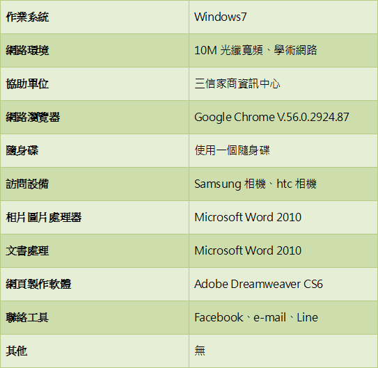

一、計畫總覽
參加計劃類別：商業類
二、地方社區
早期隱形眼鏡發展出來的並非為了美觀上的目的，而是為了矯正的角膜的不規則散光，使之獲得較佳的視力，後來才慢慢發展成為了美觀作用的矯正度數的隱形眼鏡。
隱形眼鏡從國外引進至台灣，從最早期的一般無透氧的硬式鏡片到現今普遍流行的拋棄式透氧軟式鏡片，至少也將近四十多年了。然而在國外，與隱形眼鏡有關的科技發展，無論在材質的種類、生產製造技術、保養藥水的種類與使用方式、配戴的方式等，都有許多的改變與進步。
三、專題計畫研究概要
由於時代的轉變，手機與電腦的使用量逐漸變多，使得人們近視的人也越來越多，而使得戴眼鏡的比例變高，但因為多數人們對外觀比較講究，所以有許多人們喜歡戴隱形眼鏡，使得隱形眼鏡的樣式也越來越多，使得每個人有各種不同的喜好和看法。
隱形眼鏡在現在已經很普遍了，所以使得隱形眼鏡的要求越來越多，像是日拋、月拋等的隱形眼鏡，使得人們有更多不同的選擇，而我們這組想要了解人們比較喜歡哪一種隱形眼鏡，原因是什麼，所以我們要先收集有關隱形眼鏡的品牌與種類等，並且去採訪專賣隱形眼鏡的人，在依據我們用的問卷調查，來分析最多人喜歡哪一種的隱形眼鏡，是因為品質還是價錢等原因，使得人們喜歡帶這隱形眼鏡。
四、我們的網路環境

五、遭遇需克服的難題
難題 |
情況 |
克服的方法 |
技術 |
雖然本小組成員都已經擁有丙級網頁設計證照，但有些程式碼設定還是看不懂。 |
老師請外面專業的業師來課堂上指導Dreamweaver |
時程 |
在家無法與其他成員討論，只能利用上課時間製作。 |
跟其他老師借課程來製作以及放學時留下來。 |
團隊 |
有些組員能力很強，有些組員能力普通，變成說幾乎都是能力強的組員在製作。 |
請其他組員分別幫忙打字、文字內容編修、找資料及修圖，發揮他其他的優點與長處。 |
資料 |
因為隱形眼鏡的牌子眾多，當初做專題報告的時候，光是決定品牌範圍就很困難。 |
訪問身邊的親朋好友慣用的品牌，選多數來進行專題製作的品牌範圍。 |
經驗 |
小組成員都是第一次採訪，因此專題製作用的圖片拍的不是很好，也沒有多拍一些採訪的照片及商品的照片。製作網站的時候，因為照片需要大部分為自行拍攝，變成網站製作時沒有素材。 |
有使用隱形眼鏡的小組成員購買該品牌的隱形眼鏡並且拍照。 |
六、個人心得
- 張毓芳
- 陳靖雯
- 陳志成
- 謝上智
- 蔣茗嵐
會選擇製作隱形眼鏡這個主題是因為我本身與周遭的朋友，絕大多數都是配戴隱形眼鏡，有的是選擇透明的鏡片，有的是選擇有顏色的鏡片。剛好有同學的父母親是在經營眼鏡行的，因而就近取材，利用課餘時間去採訪。
採訪的過程中，店家告訴我們，隱形眼鏡分別有硬式及軟式，因為市面上品牌太多了，本小組決定以美若康、海昌、安視優、帝康來做市場分析及問卷調查、比較品牌的促銷活動、價格及隱形眼鏡的款式。
我學到很多影型眼鏡的知識，包含他的含水量，日拋與月拋，或是彩色跟透明，還有一些使用方式，讓我更深入的了解，原本就有戴隱形眼鏡的我，才知道自己有很多的清洗方式都不正確，還有卸下的方式可以不用碰到就能將隱形眼鏡卸下，覺得受益良多。
在這次網頁製作的主題是隱形眼鏡，在我個人中對隱形眼鏡的認知不是很好，在藉由這次的主題可以讓我更進一步了解隱形眼鏡的一些基本觀念，個人有時也是會戴隱形眼鏡就原本認知裡隱形眼鏡是一定要清洗乾淨不然會對眼睛造成一些傷害。但經過了這次的研究探討和到網頁的呈現，是真的讓個人有些在個人認知裡多進了一些常識哦。
從以前到現在，有許多人時常戴著隱形眼鏡，每當看到有人要戴隱形眼鏡的時候，我都覺得為什麼不去戴眼鏡呢？還是說他們像我一樣，戴眼鏡戴太久會感到頭痛？而藉由此研究讓我了解每個人，為什麼選擇隱形眼鏡，還有大部分的人都比較喜歡什麼隱形眼鏡，希望藉由這次的網博，可以讓大家更加了解自己想要買哪款隱形眼鏡。
我們這組的組題是隱形眼鏡，戴眼鏡的人是因為眼鏡戴久鼻樑會痛所以選擇戴隱形眼鏡，隱形眼鏡是一個方便的東西，可是也有壞的地方戴太久沒有換掉的話眼睛肯能會壞掉，也有人戴隱形眼鏡是為了好看才帶的，不過發明隱形眼鏡的人真的帶給很多人便利。